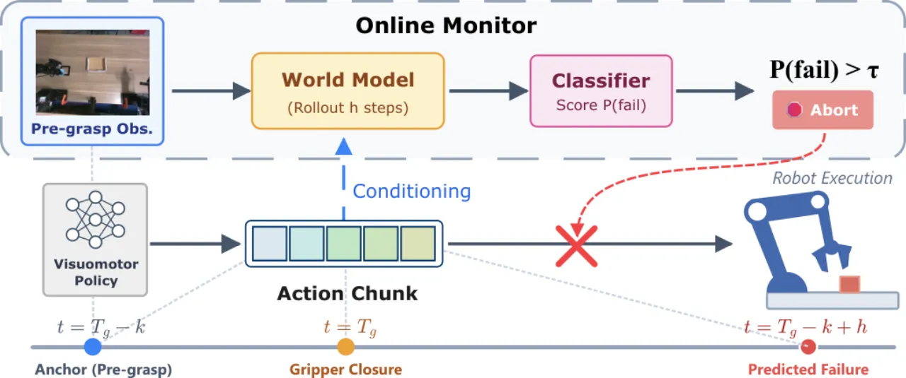
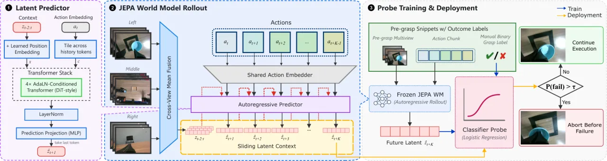
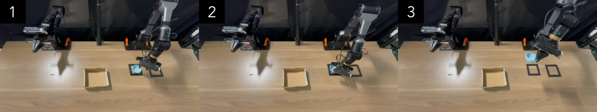
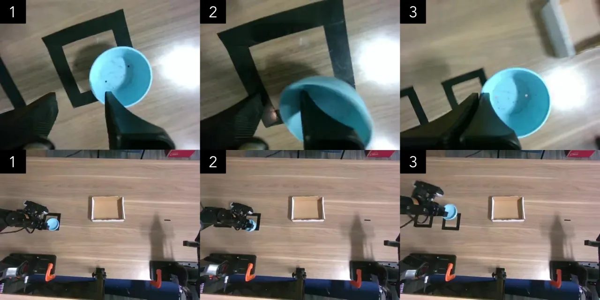

在机器人「接触前」就判断一个动作块（action chunk）会不会失败。ContactGuard 用一个动作条件的潜空间世界模型（latent world model）预测短时视觉后果，如果预测的未来潜表示指示「很可能失败」，就在夹爪闭合、造成不可逆扰动之前中止——无需改动底层策略，也无需逐像素视频生成。
接触密集（contact-rich）操作中的失败，往往到物理接触发生后才被察觉。尤其在腕部相机（wrist-camera）设置下，一个糟糕的接近轨迹可能已经把物体推走、错过、打滑或扰动，等常规检测器反应过来时，场景已被改变。ContactGuard 提出「接触前执行监控」（pre-contact execution monitoring）：在真正投入接触之前，评估「即将到来的动作是否很可能失败」。
核心问题：机器人能否在接触发生之前评估一个 action chunk 的后果，并在造成改变场景的破坏之前，停止糟糕的交互？

ContactGuard 遵循 JEPA（Joint-Embedding Predictive Architecture）思想：不生成逼真的未来帧，而是把多视角观测编码成紧凑的视觉 embedding，学习这些 embedding 在机器人动作驱动下如何演化。「在表示空间中直接预测，避免了像素级视频生成的代价与歧义。」流程分两阶段：先自监督训练潜空间世界模型，再冻结后训练一个轻量失败探针（failure probe）。

V 个固定相机提供同步观测，共享的 ViT-Tiny 编码器独立处理每个视角；逐视角 embedding 做 mean-pool 后经一层学习到的线性投影，得到单一潜向量 zt ∈ ℝD。动作嵌入器（action embedder）把关节空间动作映射到同一 D 维空间。预测器由四个 AdaLN-zero 条件化的 Transformer block 加两层 MLP 组成，用「下一潜表示回归」（next-latent regression）训练，并以 SIGReg 抗坍缩正则化（anti-collapse）防止表示崩溃。
冻结编码器与预测器后，用一个轻量 logistic regression 探针把 K 步预测潜表示 ẑt+K 映射为失败概率，采用 ℓ₂ 惩罚、类别平衡的 logistic 损失训练。探针仅需一小批带标签的接触前片段（pre-contact clips），每个任务约 250 次抓取尝试。
在 14-DoF AgileX Piper 双臂机器人、3 路同步 RGB 相机上，以 ACT 作为底层策略，评估四种抓取设定：cup pick-and-place、box pick-and-place、pencil-and-notebook grasping、towel-fold grasping。每个任务在 N=50 次受监控 rollout 上做闭环真机评测，测试片段与训练/探针拟合/阈值选择互不重叠。

| 任务 / 方法 | Precision | Recall | FAR ↓ | AUC | Bal. Acc. |
|---|---|---|---|---|---|
| Cup · Direct-linear | 0.545 | 0.960 | 0.800 | 0.661 | 0.580 |
| Cup · LeWM | 0.706 | 0.960 | 0.400 | 0.928 | 0.780 |
| Cup · Ours | 0.893 | 1.000 | 0.120 | 0.992 | 0.940 |
| Box · Direct-linear | 0.647 | 0.500 | 0.214 | 0.619 | 0.643 |
| Box · LeWM | 0.857 | 0.818 | 0.107 | 0.933 | 0.856 |
| Box · Ours | 0.864 | 0.864 | 0.107 | 0.946 | 0.878 |
| Pencil · Direct-linear | 0.468 | 1.000 | 0.893 | 0.732 | 0.554 |
| Pencil · LeWM | 0.679 | 0.864 | 0.321 | 0.872 | 0.771 |
| Pencil · Ours | 0.889 | 0.727 | 0.071 | 0.898 | 0.828 |
| Towel · Direct-linear | 0.759 | 0.880 | 0.280 | 0.841 | 0.800 |
| Towel · LeWM | 0.750 | 0.600 | 0.200 | 0.794 | 0.700 |
| Towel · Ours | 0.786 | 0.880 | 0.240 | 0.917 | 0.820 |
诚实对照：在 Pencil 上，ContactGuard 的 recall（0.727）低于 LeWM（0.864）与 Direct-linear（1.000），但以更低的误报率 FAR（0.071）换取整体更高的 AUC 与平衡精度。
| Detector | Cup | Box | Pencil | Towel |
|---|---|---|---|---|
| FAIL-Detect | .813 | .219 | .533 | .448 |
| RND | .840 | .211 | .671 | .417 |
| SAFE | .840±.009 | .925±.006 | .844±.016 | .871±.017 |
| Current latent | .840±.008 | .893±.008 | .923±.010 | .871±.015 |
| ContactGuard | .982±.003 | .984±.005 | .992±.001 | .978±.004 |

把预测器的动作输入替换/破坏后，性能显著下降，验证「动作条件」是关键：Full（如 Box 0.956）远高于 Shuffled（0.493）、Zero（Box 0.494）、Mean（Box 0.631）与 Current latent（Box 0.844）。这说明模型确实在利用「计划动作」预测后果，而非仅凭当前状态。
| Task | Full | Current | Shuffled | Zero | Mean |
|---|---|---|---|---|---|
| Cup | 0.965 | 0.758 | 0.535 | 0.847 | 0.842 |
| Box | 0.956 | 0.844 | 0.493 | 0.494 | 0.631 |
| Pencil | 0.845 | 0.829 | 0.483 | 0.559 | 0.541 |
| Towel | 0.959 | 0.801 | 0.493 | 0.659 | 0.417 |
运行时（表 4，RTX 5090，K=30，视界 1.00 s）：rollout 15.39 ms，完整一次监控 19.18 ms——满足在线运行。表 5 另显示单视角 LeWM 去掉本体感受状态、仅用图像反而更好（如 Pencil 0.878 vs 含 state 0.455）。
「ContactGuard prevents failures by abstaining, but does not recover from them or complete the task after an abort.」中止后要真正完成任务，需要一个外部恢复模块（recovery module），作者留作未来工作。
「ContactGuard targets imminent contact events whose outcome is determined within the next action chunk.」它监控的是「结果在下一个 action chunk 内即可确定」的即将接触事件。
「extending it to longer-horizon skills would require hierarchical or repeated event-level monitoring.」扩展到更长时程的技能，需要分层的或在事件级别上重复的监控机制。